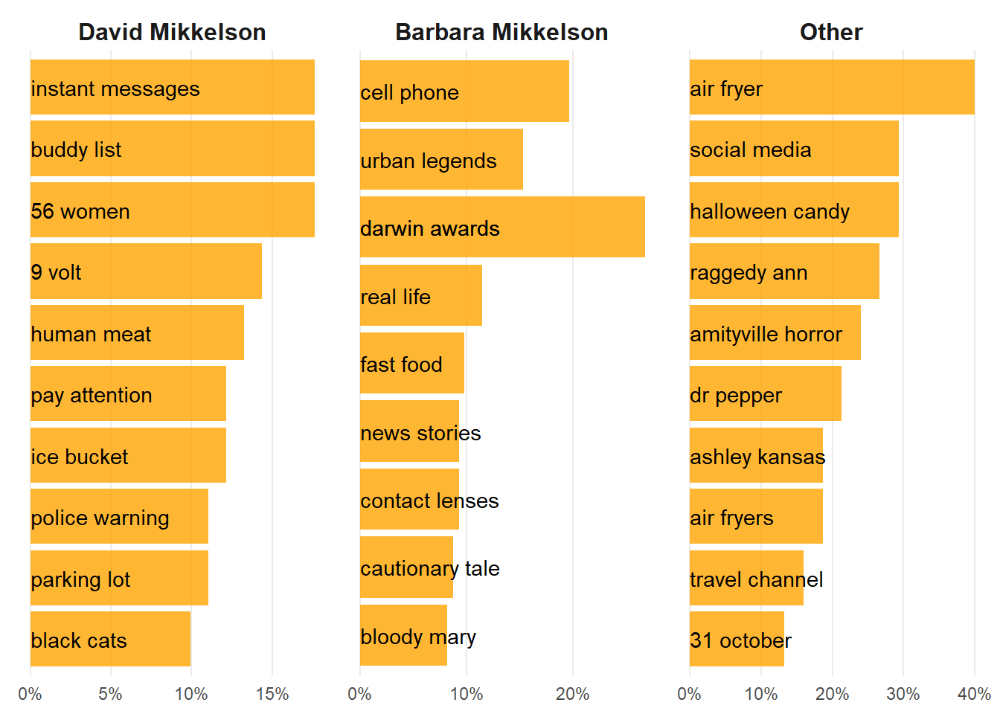

<<<<<<< HEAD
<<<<<<< HEAD
<<<<<<< HEAD
=======
>>>>>>> parent of 119519b (add owid fertility a4 graphic)
=======
>>>>>>> parent of 5888330 (Squash all)
=======
>>>>>>> parent of 5888330 (Squash all)
Presentations, Projects & Data Viz - Eerie Revelations: Text Analysis of Snopes.com’s Horror Legends
Eerie Revelations: Text Analysis of Snopes.com’s Horror Legends
Looking at the snopes.com articles as a part of #TidyTuesday Week 44 (Oct 31, 2023)
#TidyTuesday
Text Mining
Author
Aditya Dahiya
Published
November 2, 2023
’Tis the season of spookiness, and in the spirit of #TidyTuesday, we delve into the cryptic world of snopes.com, a realm filled with explaining (and debunking false) horror legends and mysterious tales. Snopes, once known as the Urban Legends Reference Pages, is no ordinary fact-checking website. It has been whispered about as a “well-regarded reference for sorting out myths and rumors” on the vast, dark Internet.
Back in 1994, a time when shadows concealed secrets and the internet was a nascent entity, David Mikkelson and Barbara Mikkelson summoned forth an urban folklore web site, which would later evolve into the enigmatic Snopes.com. In this analysis, we shall peer into the texts of over 200 articles that dwell on snopes.com, deciphering how their content has evolved over the ages. Furthermore, we will unearth the themes crafted by different authors, distinguishing the works of David and Barbara Mikkelson from the rest of the snopes staff.
Prepare yourself, for we shall conjure data tricks, harnessing arcane knowledge from the tome known as Text Mining with R by Julia Silge and David Robinson. Let the haunting analysis begin!
Data Sources & Methods: R Libraries, Data and Stuff
We begin by combining the raw text of articles from snopes.com“Fact Checks - Horror”, and the data provided at #TidyTuesday (Codes below)
Code
# Loading librarieslibrary(tidyverse) # for everything tidy manipulation and plotlibrary(gt) # for nice tableslibrary(visdat) # for visualizing datalibrary(tidytext) # Text Evaluationlibrary(rvest) # Web-scraping for complete articleslibrary(here) # for locating files and datasetlibrary(ggthemes) # beautiful themes for ggplot2library(scales) # for nicely formatting axes labels# Read data directly from GitHub# horror_articles <- readr::read_csv('https://raw.githubusercontent.com/rfordatascience/tidytuesday/master/data/2023/2023-10-31/horror_articles.csv')# Using harvested data - to include complete text of all articleshorror_articles <-read_csv(here("docs", "horror_legends.csv"))# Note: I have loaded the improved data set, in which I have web-scraped the the paragraphs text from snopes.com using code for Web-scarping with rvest.# The code is shown below
Code
# Credits: https://github.com/rfordatascience/tidytuesday/blob/master/data/2023/2023-10-31/readme.md#cleaning-scriptlibrary(tidyverse)library(here)library(fs)library(rvest)working_dir <- here::here("data", "2023", "2023-10-31")urls <-paste0("https://www.snopes.com/fact-check/category/horrors/?pagenum=",1:15)extract_rating <-function(article_page) { rating <- article_page |> rvest::html_element(".rating_title_wrap") |> rvest::html_text2() |> stringr::str_remove("About this rating")if (is.na(rating)) { rating <- article_page |> rvest::html_element(".status_color") |> rvest::html_text2() }if (is.na(rating)) { rating <- article_page |> rvest::html_elements("noindex") |> rvest::html_text2() |> stringr::str_squish() |> stringr::str_subset("^Status:") |> stringr::str_remove("Status:") } rating <-tolower(rating) |> stringr::str_squish() |> stringr::str_remove("\\.|\\:") rating <- dplyr::case_match( rating,c("a number of real entries, one unknown, and one fiction","multiple","multiple — see below","two real entries, the others are fiction" ) ~"mixture",.default = rating )return(rating)}extract_claim <-function(article_page) { claim <- article_page |> rvest::html_element(".claim_cont") |> rvest::html_text2() |> stringr::str_squish()if (is.na(claim)) { claim <- rvest::html_elements(article_page, "p") |> rvest::html_text2() |> stringr::str_subset("^Claim:") |> stringr::str_remove("Claim:") |> stringr::str_squish() }return(claim)}horror_articles <- urls |> purrr::map( \(article_list_url) { article_list_url |> rvest::read_html() |> rvest::html_elements(".article_wrapper") |> purrr::map( \(article) {# Grabbbing info from this page can result in truncation. Instead grab the# URL and dig into that. url <- article |> rvest::html_element("a") |> rvest::html_attr("href") article_page <- rvest::read_html(url) tibble::tibble(title = article_page |> rvest::html_element("h1") |> rvest::html_text2(),url = url,# Failed for some articles <= 2015-05-16rating =extract_rating(article_page),subtitle = article_page |> rvest::html_element("h2") |> rvest::html_text2(),author = article_page |> rvest::html_element(".author_name") |> rvest::html_text() |> stringr::str_squish(),published = article |> rvest::html_element(".article_date") |> rvest::html_text2() |> lubridate::mdy(),# Failed for some articles <= 2015-05-16claim =extract_claim(article_page) ) } ) |> purrr::list_rbind() } ) |> purrr::list_rbind()readr::write_csv( horror_articles, fs::path(working_dir, "horror_articles.csv"))
We‚Äôve thrown in a dash of rvest(Wickham 2022a) magic to web-scrape the full text of these articles, ensuring we have all the spectral data we need to spookily analyze their content. üëªüï∏Ô∏èüìú
Code
# An empty data frame to write the complete text of all articles intotextdf <-tibble()# Harvest data of complete text of all articles on snopes.comfor (i in1:nrow(horror_articles)) { rvest_urls <- horror_articles[i, ] |>pull(url) rvest_title <- horror_articles[i, ] |>pull(title) tempdf <-read_html(rvest_urls) |>html_nodes("p") |>html_text2() |>as_tibble() |>filter(str_length(value) >250) |>mutate(paragraph =row_number(),title = rvest_title ) textdf <-bind_rows(textdf, tempdf)}# Combining harvested data with provided data and save as csv# to avoid scraping a website again and againtextdf |>left_join(horror_articles) |>rename(text = value) |>write_csv("docs/horror_legends.csv")
Exploring the publication and authorship of Articles
Now, let‚Äôs dive into the data crypt with exploratory data analysis in R, where we unearth 253 eerie articles and over 2,400 paragraphs waiting to be dissected. Mysteriously enough, a majority of these articles were penned by the dynamic duo of David and Barbara Mikkelson, and their tales span from the late 1990s to the present day. The following Figure 1 unveils basic trends üëª
Code
horror_articles |>ggplot(aes(published)) +geom_histogram(fill ="orange",col ="black") +theme_minimal() +labs(y ="Number of articles published",title ="Articles published on snopes.com in \"Facts Check: Horror\" over the years",x ="") +theme(plot.title.position ="plot",axis.line =element_blank(),panel.grid.minor =element_blank(),panel.grid.major.x =element_blank())horror_articles |>count(author, sort =TRUE) |>mutate(author =fct(author),author =fct_lump_n(author, n =2, w = n)) |>group_by(author) |>summarise(n =sum(n)) |>mutate('Percentage of Total Articles'= n/sum(n)) |>rename(Author = author,`Number of Articles`= n) |>ggplot(aes(x ="",y =`Number of Articles`,fill =reorder(Author, `Number of Articles`),label =`Percentage of Total Articles`)) +geom_col(position ="stack", col ="white") +geom_text(aes(label =paste0(Author, ": ", `Number of Articles`)),position =position_stack(vjust =0.55)) +coord_polar(theta ="y", start =0) +theme_void() +theme(legend.position ="none") +scale_fill_brewer(palette ="Oranges") +labs(title ="Number of articles at snopes.com by authorship")
(a) Timeline
(b) Authorship
Figure 1: Articles at Horror Legends Fact Check - dates of publication
Most common “horror-legends” words (over the years)
When we set out on our quest to unearth the most common words, we first tried our luck with titles, subtitles, and claims. Alas, these snippets were as fleeting as ghostly whispers, and no meaningful words could be found repeating. So, we embarked on a daring journey into the depths of web-scraping using rvest(Wickham 2022b). The treasure we unearthed was worth the eerie expedition. Figure 2 shows the most common words that have echoed in “Facts Check - Horror Legends” over the years. It seems “car” was popular in horror in late 1990s and mid-2000s, while “police” was popular in early 2010s.
Code
# Number of common words to plotcommon_n <-6stop_words <-bind_rows(tidytext::stop_words,tibble(word =c("nbsp", "nobr", "dt", "dd", "font", "color","story", "legend", "time"),lexicon ="CUSTOM" ))tidy_horror <- horror_articles |>select(text, paragraph, title, published) |>unnest_tokens(output ="word", input = text) |>anti_join(stop_words) common_words <- tidy_horror |>count(word, sort =TRUE) |>slice_head(n = common_n) |>pull(word)tidy_horror |>filter(word %in% common_words) |>mutate(word = snakecase::to_title_case(word)) |># mutate(word = fct(word, levels = common_words)) |> count(published, word, sort =TRUE) |>ggplot(aes(x = published, y = n, col = word)) +geom_smooth(se =FALSE, span =0.2) + gghighlight::gghighlight(unhighlighted_params =list(col ="lightgrey") ) +facet_wrap(~ word, ncol = (common_n %/%3)) +labs(y ="Number of times the word appears in the articles",x =NULL) +scale_x_date(date_breaks ="3 year",date_labels ="%Y") +theme_minimal() +theme(legend.position ="none",panel.grid.minor =element_blank(),panel.grid.major.y =element_blank(),axis.text.x =element_text(angle =90),plot.title.position ="plot",strip.text =element_text(face ="bold"))
Figure 2: The most common words in snopes.com articles over time
Now, lets cast our gaze upon two word clouds, one representing the older articles (before 2010) and the other the newer articles (after 2010). The common words emerge like familiar apparitions, reminding us that some things in the world of horror legends never change. But, don‚Äôt be too quick to dismiss the surface-level spookiness. To plunge even deeper into the crypt of understanding, we shall wield the powerful technique of natural language processing, tf-idf to uncover the truly important words lurking in the shadows. Read on for the thrilling revelations that lie ahead! üîç
Code
library(ggwordcloud)tidy_horror |>mutate(period =if_else(published <as_date("2010-01-01"),"Old Posts on snopes.com (pre-2010)","Newer posts on snopes.com (post-2010)")) |>count(period, word, sort =TRUE) |>group_by(period) |>mutate(prop_word = n/sum(n)) |>slice_max(order_by = prop_word, n =100) |>ggplot(aes(label = word,size = prop_word)) +geom_text_wordcloud() +facet_wrap(~ period) +theme_minimal() +theme(strip.text =element_text(face ="bold"))
Enter the realm of tf-idf, a magical incantation from the realm of information retrieval, where we unveil the importance of words within articles. In this eerie exploration, our main focus falls upon Barbara Mikkelson and David Mikkelson. As for the rest of the authors, they’ve contributed only sparsely, so we merge their meager contributions into a collective cauldron.
Some interesting revelations emerge in Figure 4 . David’s articles were dominated by words “smarties,” “Houdini,” “hotel,” “perfume,” and “meat” as if weaving a curious web of mystery. Meanwhile, Barbara’s writings whispered of “Darwin,” “webkinz,” “purse,” and “kidney,” painting a vivid tapestry of subjects that have danced through her tales.
Figure 4: Unique and Important recurring words, sized by recurrence, in works of different authors at snopes.com
Venturing deeper into the depths of our textual analysis, we’ve summoned the most common two-worded phrases, also known as bigrams, from the works of our different authors. These combinations of words offer a glimpse into the unique patterns and narratives that each author weaves: –
Code
remove_words <-c("https", "www.snopes.com", "color_g", "absmiddle", "return", "class", "width", "align", "border", "height")horror_articles |>unnest_tokens(output = bigram,input = text,token ="ngrams",n =2) |>filter(!is.na(bigram)) |>separate(bigram, c("word1", "word2"), sep =" ") |>anti_join(stop_words, by =join_by("word1"=="word")) |>anti_join(stop_words, by =join_by("word2"=="word")) |>mutate(author =fct(author),author =fct_lump_n(author, n =2) ) |>count(author, word1, word2, sort =TRUE) |># Remove some stop words and technical html wordsfilter(!(word1 %in% remove_words)) |>filter(!(word2 %in% remove_words)) |># Uniting back word1 and word2 to form a bigramunite(col ="bigram", word1, word2,sep =" ") |># To run the analyses by authorgroup_by(author) |># Removing duplicacies in plural and singular termsmutate(bigram =if_else(bigram =="darwin award","darwin awards", bigram)) |>mutate(bigram =if_else(bigram =="urban legend","urban legends", bigram)) |>mutate(perc_word = (100* n) /sum(n) ) |>slice_max(order_by = perc_word, n =10, with_ties =FALSE) |>ggplot(aes(x = perc_word, y =fct_reorder(bigram, n))) +geom_col(fill ="orange", alpha =0.8) +geom_text(aes(label = bigram,x =0),hjust ="left") +facet_wrap(~ author, scales ="free") +scale_x_continuous(labels =percent_format()) +labs(x =NULL, y =NULL) +theme_minimal() +theme(axis.text.y =element_blank(),panel.grid.major.y =element_blank(),panel.grid.minor.y =element_blank(),panel.grid.minor.x =element_blank(),strip.text =element_text(face ="bold",size =12) )

Figure 5: Most common bi-grams by authors in the articles of horro legends at snopes.com
“Sentiments” in Horror-Legends over the years
Now, let‚Äôs unravel the evolution of sentiments in articles spanning the past two decades. Armed with the nrc sentiment analysis (Mohammad and Turney 2012) and the methods from Text Mining with R we depict the ebbs and flows of emotion in the written word visually. As we see in ?@fig-sentiment-time , recently, articles have become more laced with words expressing ‚Äúfear‚Äù and ‚Äúanticipation‚Äù. Meanwhile, words expressing ‚Äúdisgust‚Äù and ‚Äúsadness‚Äù seem to have faded over time. The ghosts of emotions past are shifting and morphing in the text, revealing a tale of changing sentiments in horror legends. üëª
Visualizing word-networks within “horror legends”
To add a touch of visual enchantment to our exploration, we‚Äôve harnessed ggraph(Pedersen 2022) to craft a captivating map of the most common word associations within the realm of horror legends. As anticipated, certain word pairings emerge as familiar apparitions, like ‚Äúcell phone,‚Äù ‚Äúurban legends,‚Äù ‚Äúgas stations,‚Äù ‚Äúfast food,‚Äù and ‚Äúsocial media,‚Äù which seem to haunt the narratives time and again. However, one curious gem in this tapestry of terror is the mention of ‚ÄúLos Angeles,‚Äù a city that may harbor its own cryptic secrets in the world of horror legends. üó∫Ô∏è
Mohammad, Saif M., and Peter D. Turney. 2012. “CROWDSOURCING A WORDEMOTION ASSOCIATION LEXICON.”Computational Intelligence 29 (3): 436–65. https://doi.org/10.1111/j.1467-8640.2012.00460.x.